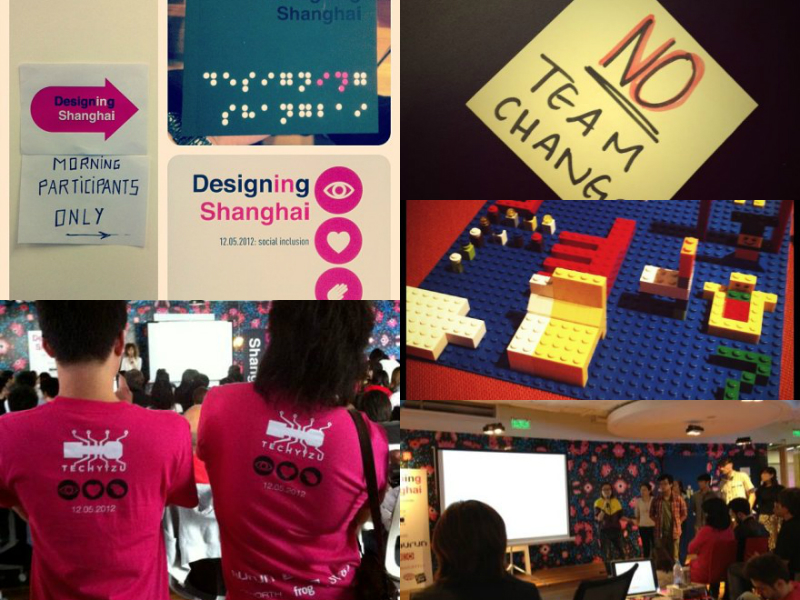
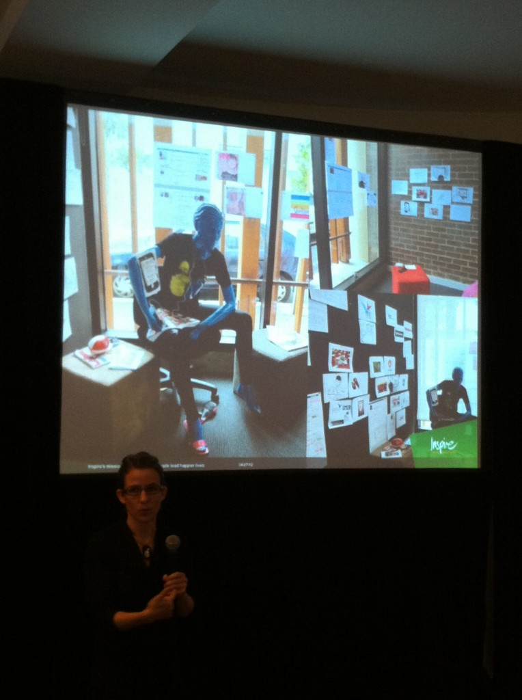
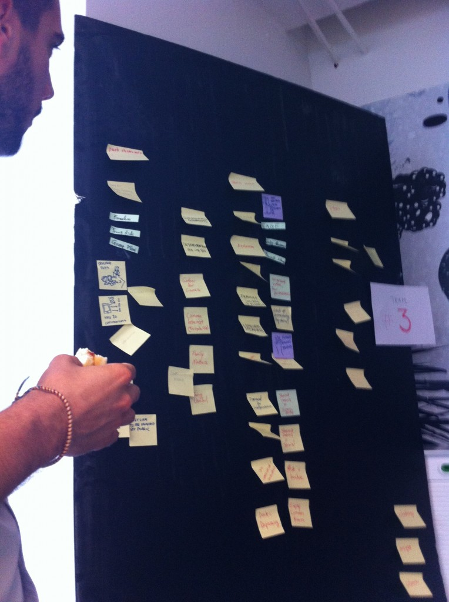
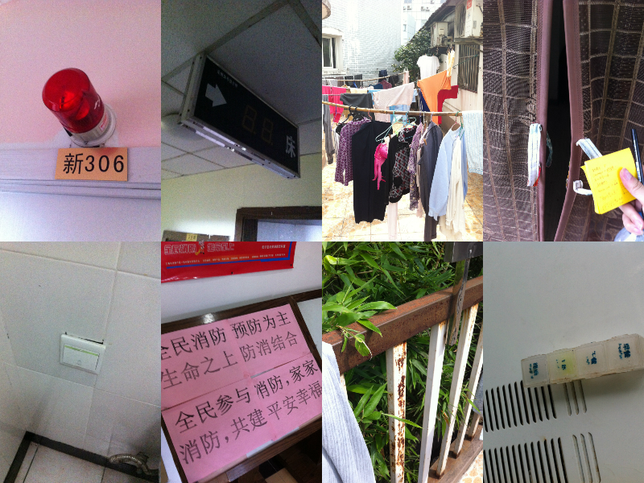
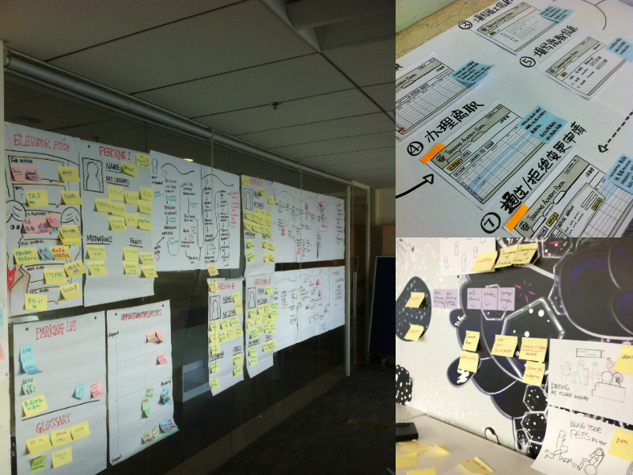

周末参加了UXDAY2012的活动即Designing Shanghai2012，活动的过程是去中山公园观察公园里的老人，以及探访老人之家，寻找到可以设计可以帮助老人建立更好生活体验的地方。活动很精彩，在整个过程中我也发现5个体验设计师可以改进的习惯，这里我总结一些我的方法和经验，希望给大家帮助。

用户情境观察的结果是感受或结论，而不是事实
活动第一个环节是去中山公园和老人之家观察老人的行为，回来以后我们将收集的信息展示在黑板上。我看到了诸如“消极和悲观”、“孤独”、“希望社交”、“热衷于被关注”的信息，而在我看来这些信息都不足以成为建立情境所需要的高质量的信息。
体验设计的第一步是建立一个尽可能真实的情境，在这样的情境中才可能产生尽可能真实的问题（problem），于是一个真实的情境需要真实的素材来构建。当你说“老人们热衷于被关注”的时候，你是基于什么有这样的结论──我们需要一个真实发生的故事。
对于“热衷于被关注”这一点，我也有类似发现，而我更多是表达一个“故事”：领头的老人会把报道他们的报纸叠成豆腐块，随时揣在口袋里，拿出来说给关注他们的年轻人看。这是一个“故事”，而不是一个“推断”。
情境应该基于“故事”，而不应该基于一个武断的“推断”，有足够多这样真实的故事，就可以让我们的情境变得更加丰满，因此而发现的问题或机会，就会变得贴和用户的需要。
如果可能的话，把这些小故事用草绘的形式（或照片）表达出来，贴在墙上，布置一个情境房间，在房间里进行设计。这是一个在参加Service Design 2012 Melbourne看到的案例，把所有拍摄到的“故事”贴在一个模特的周围，布置一个情境房间。

用自己的感官感觉替代用户的感官感觉
在老人院的时候，作为有优越生活的一群人，我们不自然地对整个环境有了一个先入为主的判断，在头脑风暴时，很多人的发现是“缺乏幸福感的环境”、“潮湿阴暗无助”、“缺乏对社交的帮助”等等，这样结论往往是对环境的感官感觉是主观的结论而非基于一个真实的故事（insights）

也许有老人也是这么想，但是作为用户和情境的研究者，我们不能用自己的感官感受来代替使用者的感官感受，在这里，我们同样需要各种各样的故事去支持这些感官的评价。
人对情境的感官感觉来自于对周边每次互动时的反馈。于是我们需要思考的是老人与整个环境的互动，例如：走道的扶手；洗手间的扶手；灯的开关；床；轮椅；门以及门的扶手；座椅等等，这些就是交互触点（touchpoint），对所有触点的整体体会才构成了对整体情境的评价。
而我们作为设计师，第一次来到这个环境，对整体情境的评价只来自于视觉、嗅觉、以及与以往经历的比较，而没有亲身体会那些老人们每天都在接触的交互触点，那么我们的感官判断是不准确的。
对现在的解决方案不敏感
发掘用户问题最好的方法是去研究现有的解决方案，因为绝大部分情况，只要还在使用的解决方案，背后一定有一个被解决或解决不好的问题，研究他们，自然能够挖掘出真实存在的问题。
而我观察到我们很多人的方案更多还是与老人们直接沟通，问他们有什么问题，感觉怎样，而对现有的解决方案并不敏感。并不是说这种直接沟通不重要，而在于对于现有解决方案的了解有助于理解用户当前真正的需要，有意思的是，用户大部分情况会因为习以为常而忘记他周围常用的工具到底解决什么问题。
因为时间有限，我观察了一个老人身边现有的一些解决方案，例如，健身器材，我看到因为在户外，健身器锈迹斑斑，有一个老人来锻炼的时候，还需要另外一个人帮助她抓住有些高的把手，注意，这些都是观察结果，要做的只是忠实记录，而不是做判断；其他的解决方案还包括报警器、每日的药盒、电视机和遥控机、纱门等。下面是我拍摄的部分解决方案，每个现有的解决方案背后一定有真实存在的问题正在被不同程度地解决。

如果时间充裕，我们应该对老人周围所有用到的解决方案进行一个完整的分析，分析结果应该包含每个解决方案应该解决的问题，有什么使用困难（改进点），各个解决方案之间有没有联系（创新点）等。
这个解决方案图谱完成之后，相信你就会对目标用户有一个完整的认识，当然，了解解决方案的最佳方式是亲自体验。
还没想清楚为什么这样，就开始想为什么不那样
我看到最严重的问题是对解决方案的痴迷。在我看来，有创造力的含义是发现和定义一个用户真实存在问题，甚至不是解决了这个问题──发现和定义问题是一切设计的核心，当你发现了问题，最有本事的事情是用一个现有的东西去解决而非重新创造。
这种痴迷体现在还没想清楚为什么是现在这个样子，就开始想为什么不那样。当我们谈老人院的时候，在我们还没有想清楚，这个我们看来“阴暗无助充满社交阻隔的地方”为什么是现在的样子前，我们马上就开始思考如何把这个地方变得“幸福活力阳光充满欢乐”。
这件事的核心在于还没确定这是个问题就开始尝试解决问题，那么在我看来，这是承担巨大假设风险的。在进入解决方案的讨论前，应该明确的是两个问题：一是这是不是一个问题？二这个问题是不是我们应该最先解决的？如果这两个问题没有被很好的回答，除非运气极好，最后的结果无非是解决了个根本不是问题的问题，或者解决了不该现在解决的问题。
不愿意做小
很多人热衷于颠覆性的设计，而不愿意做小的改进，把创造等同于创意。我对这个问题的理解是，当你没有很好定义出典型用户、场景、和他们在场景中遇到的具体问题，而是用一个宽泛的断言代替设计方向，那么设计就会变得巨大。
如果你的设计挑战是如何让老人变得快乐，你设计很可能变得漫无边际；而如果你的设计挑战是如何让在中山公园组织老人活动的老王更好地宣传他们的社团使得更多人参加，你的设计就可能变得实际和具体。
也许有人说，那么你设计的东西就会变得狭隘，这是限制创新，其实并不是，当你深入到老人的情境中，梳理出更多基于真实故事的设计挑战，例如：如何让老人院的张爷爷记住自己喜欢的电视节目；如何让他锻炼自己的手指头；如何鼓励中山公园的社团参与者更多资助社团活动等等，这一系列小的设计挑战被解决以后，自然是整个体验的提升，自然是一件大的事情。
体验设计中把设计环节需要的心智模型（mentality）定义为“可实现”（rationality），而把发现问题环节定义为“创造力”（creativity）确实不无道理，创造力应该体现在发现具体问题并转化成具体设计挑战的过程中，而设计过程应是切中要害，最忌天马行空，没有商业和技术支持的设计不产生任何价值。
说多过于画
在表达解决方案的时候，我仿佛回到了H公司的需求讨论现场，要么所有人都在说，要么只听一个人说，其他人不敢说，没有人使用任何可视化的工具引导讨论，后来我画了几张关于解决方案的草图才让无休止的讨论回到正轨。
这就是为什么我们更加注重视觉引导的能力──如果可能事先把设计过程的框架用视觉化的方式搭建好；尽可能地使用白板，持续不断地把已经达成一致的东西写在白板上；更好使用贴纸的颜色，及时对信息进行组织和验证；对同一个设计挑战分组进行草图设计并展示，避免设计被那些口才好，强势有气场的人绑架。

图中右下角是我们最后的故事板，添加了一些草图后使得沟通更加有效率，其他两副图展示了我们做workshop的时候推崇的过程可视化的场景，大量使用草图、白板、并随时将过程产物贴在墙上。
写在最后
我能理解这样的活动不需要太多条条框框的设计方法进行限制，这只是我的一些思考和经验分享，并不代表大家是不够格的设计师。
另外非常感谢techyizu组织这么好的活动，我曾经在牛津参加Design Jam，组织形式类似，它有个环节是在报名时每个人需要提供一个角色：例如designer, developer, 或者strategist等，以保证每个设计团队有足够平衡，供参考。但这个全球性的活动当时并没有用户研究的环节，而正是这个深入用户进行研究的活动真正让我学习到了很多东西，谢谢大家的努力，也希望不久的将来能在北京看到类似的活动。
最后的最后
如果你发现这篇文章实际上是六个习惯而不是五个习惯，那么你真的没有除了上面五个习惯之外，设计师应该改进的第六个习惯：不会数数。无论如何，至少你仔细看了，应该谢谢你。